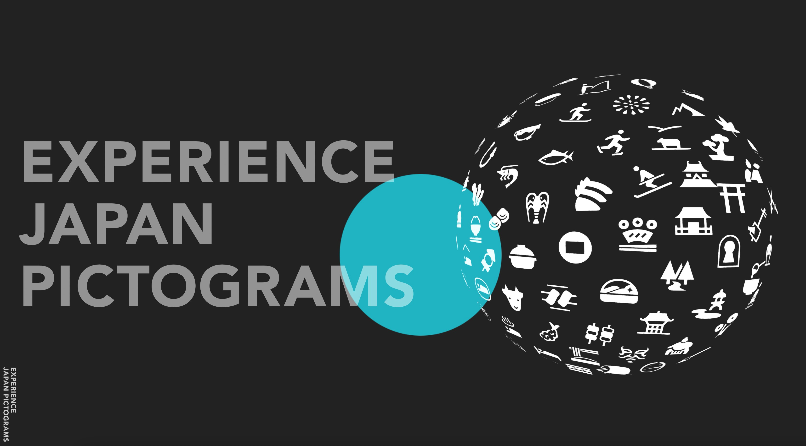
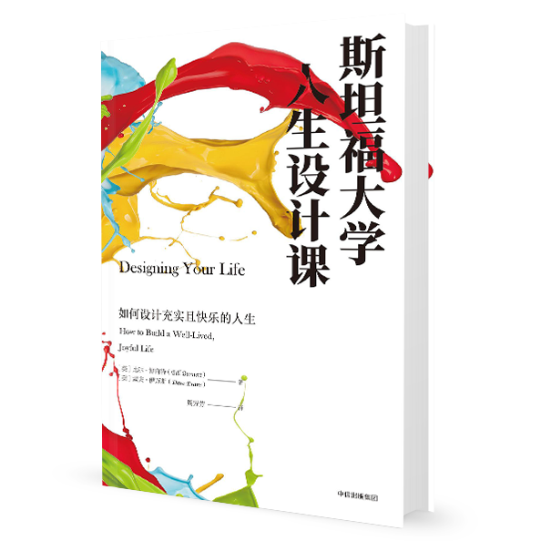
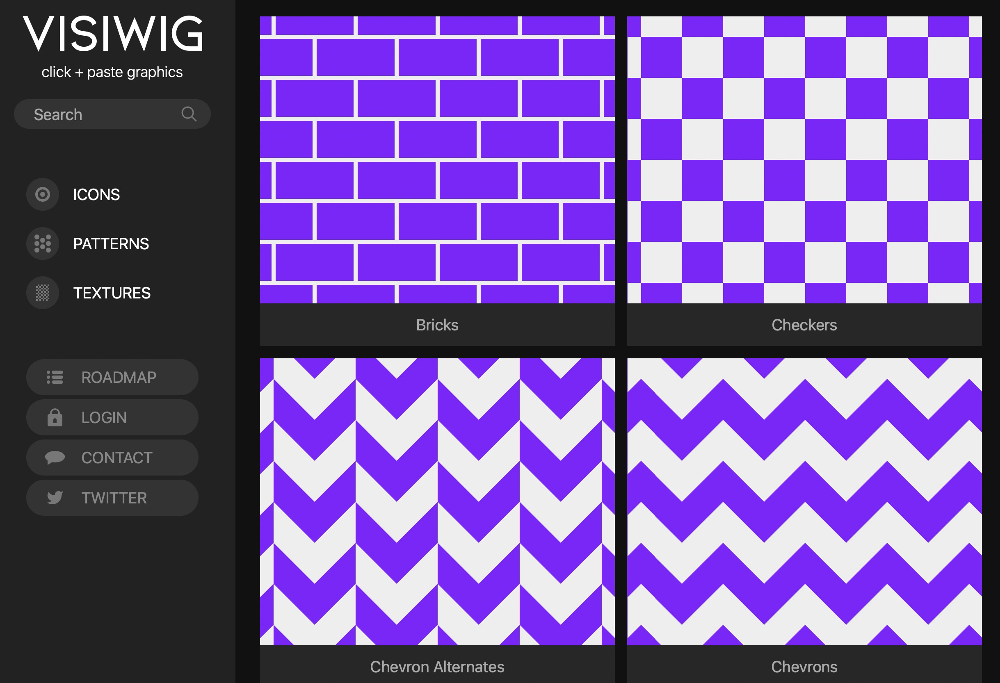
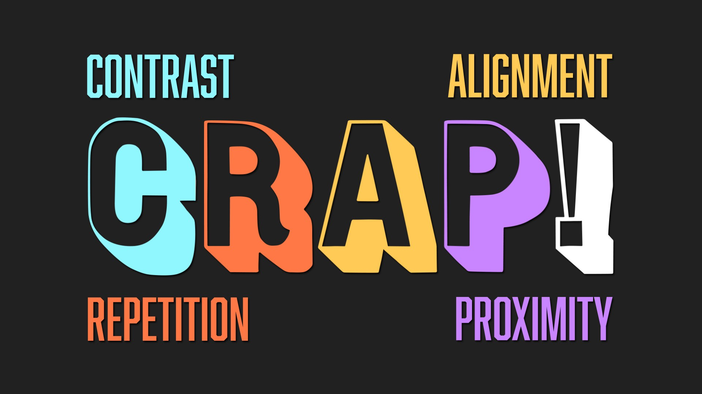
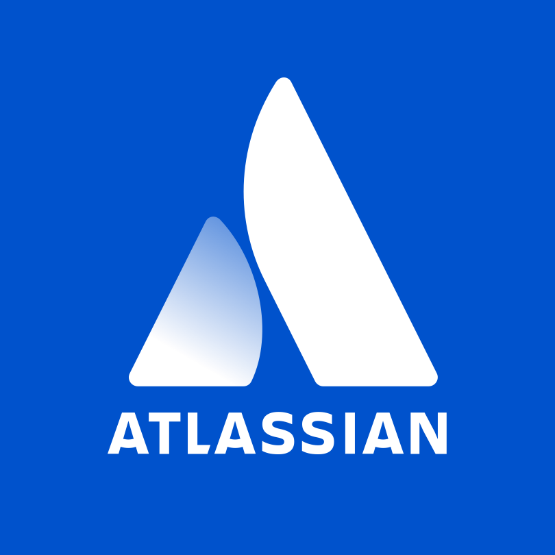
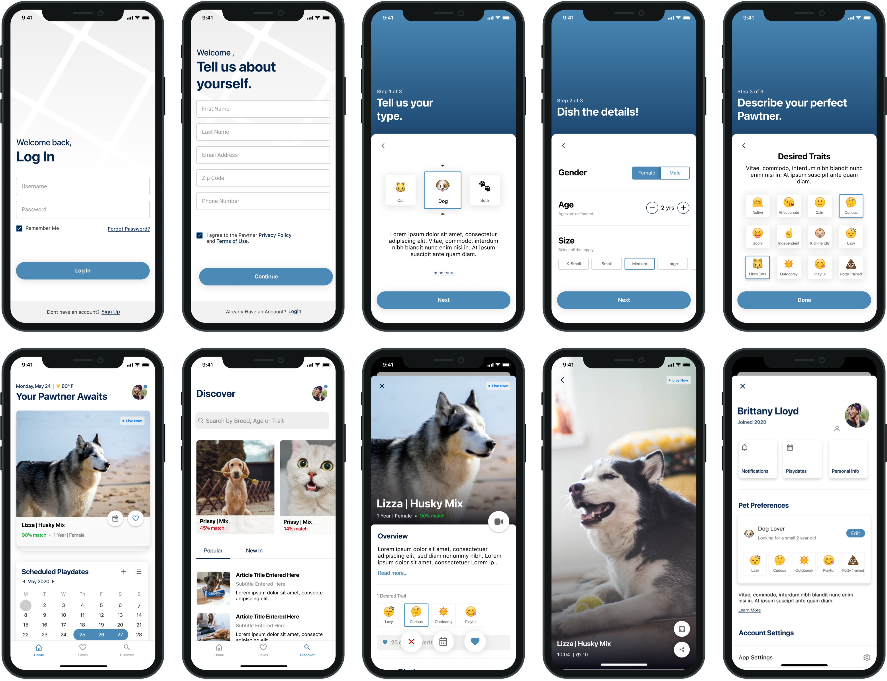
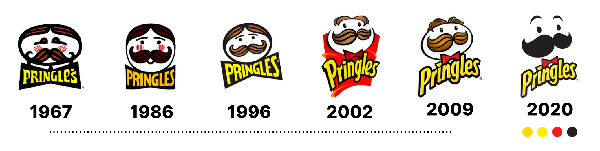
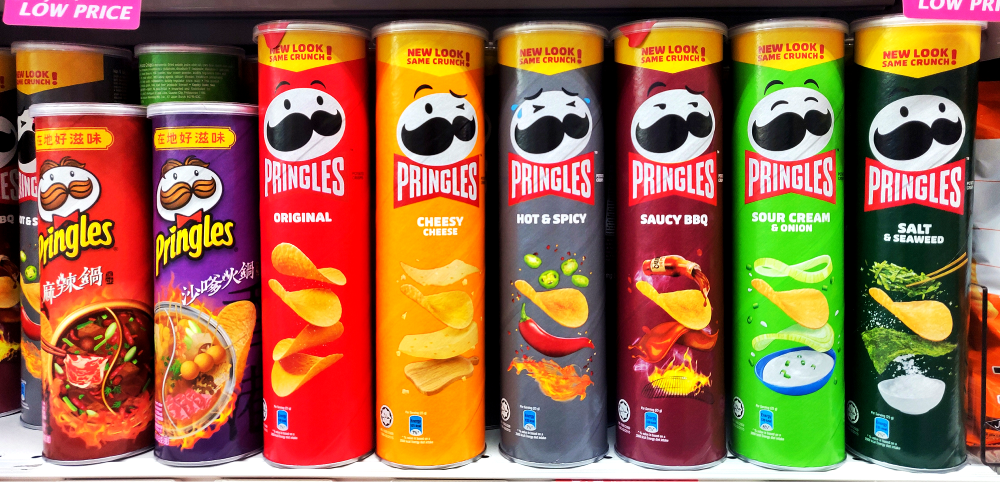
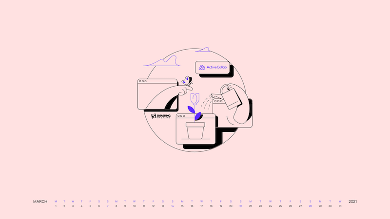
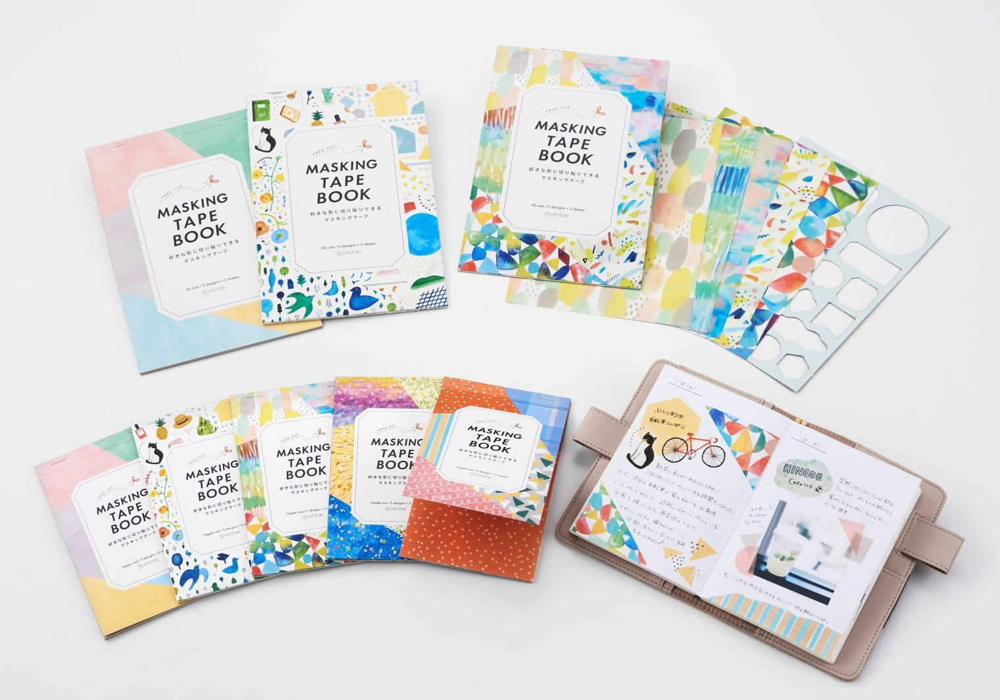

设计周刊 Design Weekly #48
📕 设计资源
一个装满日本故事的图标库
https://experience-japan.info/en
该项目有日本设计中心构思和制作，旨在支持日本旅游业，从视觉设计的角度增强游客在日本的旅游体验。

设计师必收！来自 frog 设计师的 2021 年度书单
https://www.shejipi.com/539261.html
这里囊括了设计师们在这一年中读过最具价值的书，这些书为我们看待事物提供了新的视角，为思想带来新的启发和灵感，也帮助我们成为更好的自己，以从容应对不断变化的挑战。
这份书单中的每一本书都是由来自不同专业和背景的青蛙们精心挑选。由于 frog 多样化的团队构成，你可能会发现书单中包含了风格迥异的各类书籍。
祝阅读愉快! 愿你能从我们的最爱的书中，找到属于你的宝藏。

VISIWIG: Vector Pattern Generator
https://www.visiwig.com/patterns/
矢量图案生成器，自定义无缝图案，可导出到web或您最喜爱的矢量软件中。

📗 设计文章
CRAP! 4 Basic Design Principles Every Creator Should Know
https://medium.muz.li/crap-4-basic-design-principles-every-creator-should-know-72908b4b7d96
每位创作者都应该知道的 4 个基本原则，以及如何使用 CRAP 吸引读者注意力。

What you need to know about design systems in 2021
在2020年前所未有的转变中，数字产品起到了推波助澜的作用，本文是继2021年产品设计趋势报告之后，又一篇对设计系统变化的思考对话，在设计道路上方便大家更好的了解产品发展的上下文。
Atlassian 设计团队是如何从创意到执行的
设计是一个充满挑战的世界。项目前的路障和缺乏一致性往往会导致延误，使工作无法完成。但设计不一定是一个上坡路–以Atlassian为例。该团队创建了Confluence模板，以打破他们最常见的创意障碍。

📘 设计案例
宠物领养 app 的设计案例
https://medium.muz.li/pawtner-pet-adoption-app-concept-4e84868645ff
这是一个概念项目，通过对移动端宠物领养方式的探索，鼓励简化人们收养毛孩子的方式。

P先生（PRINGLES）背后的品牌故事
https://blog.prototypr.io/behind-branding-is-that-really-pringles-6c83c35ae964
2020 年，P先生有了焕然一新的面貌，造型更加平坦简洁，新的造型中 P 先生失去了所有的头发，但闪亮的眼睛和富有表现力的眉毛都使这个造型更加鲜活。


📙 设计灵感
Fresh Inspiration (2021 Wallpapers Edition)
https://www.smashingmagazine.com/2021/02/desktop-wallpaper-calendars-march-2021/
新鲜出炉的三月创意壁纸，该项目来自 smashingmagazine的每月壁纸冒险，来自全球各地的艺术家和设计师发挥他们的创造力，创造独特又鼓舞人心的壁纸。

2021 年日本文具神仙打架现场
https://www.topys.cn/article/31469
在文具种草界，日本文具大赏理应占据一席之地。这个奖项2013年开始举办，到今年第9届，已经是一个成熟的种草活动了。
